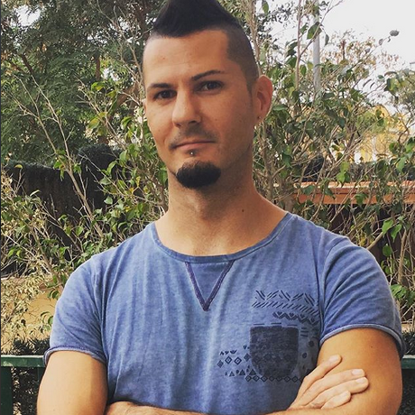

¿Qué tiene de particular probar software para niños?
Cuando estamos construyendo software para niños debemos tener en cuenta ciertas consideraciones al momento de hacer las pruebas. Estas particularidades tienen que ver con que las preferencias de los niños son diferentes a las nuestras y con que los niños todavía están en pleno proceso de desarrollo.
En esta charla les voy a contar cuáles son esas diferencias y cómo nos impactan desde el punto de vista de las pruebas. Nadia Cavalleri
Más información
Enlace al video
The Pragmatic Front-end Tester
Testing the front end shouldn’t be that hard! There are ways to achieve a healthy testing strategy for our front-end applications.
In this talk we’ll discuss, explore, and showcase some of the best practices around what to test, and also how to test it.
Más información
Enlace al video
¡Se me ha roto la accesibilidad!
En esta charla os contaré cómo mantener vuestro sitio web accesible a lo largo del tiempo,
sin tener que estar realizando constantes tests manuales cada vez que se hace un cambio en la interfaz. Aprenderemos a crear tests automatizados (analizando páginas completas o componentes aislados), e incluso crearemos tests utilizando lectores de pantalla, todo de manera totalmente automática, y los incluiremos como parte del flujo de integración continua de vuestro software.
Más información
Enlace al video

Lo nuevo de Katalon Studio para Testing Automatizado
Gastón Marichal y Carolina Rodriguez nos hablarán sobre las novedades de Katalon Studio.
Más información
Enlace al video

11 de Diciembre, 19:00 CET
Charlando sobre automatización, TDD y BDD con Carlos Blé
Hablaremos junto a Carlos Blé sobre TDD, BDD y automatización. Será una entrevista/charla en la que resolveremos nuestras dudas y las de la comunidad.
Más información
Enlace al video

5 de Noviembre, 22:00 CET
Patrones de diseño en la automatización: ¿PageObject o ScreenPlay?
Abel Quintana nos habla sobre el patrón de diseño PageObject y muestra a través de ejemplos prácticos sus ventajas y desventajas en comparación con otra alternativa, el patrón ScreenPlay.
Más información
Enlace al video

27 de Septiembre, 20:00 CET
Los mil millones de usuarios que debes considerar en tus pruebas
Lisandra Armas en su charla hablará sobre cuando una compañía lanza una aplicación al mercado, debe considerar la accesibilidad como un factor importante en sus aplicaciones debido a que estaría dejando sin acceso a más de mil millones de personas en todo el mundo que se encuentran en situación de discapacidad; para evitarlo es esencial que desde nuestros roles en los proyectos seamos defensores del diseño y desarrollo accesible.
Más información
Enlace al video